Ghost Rider (Robbie Reyes) (Terre-616)
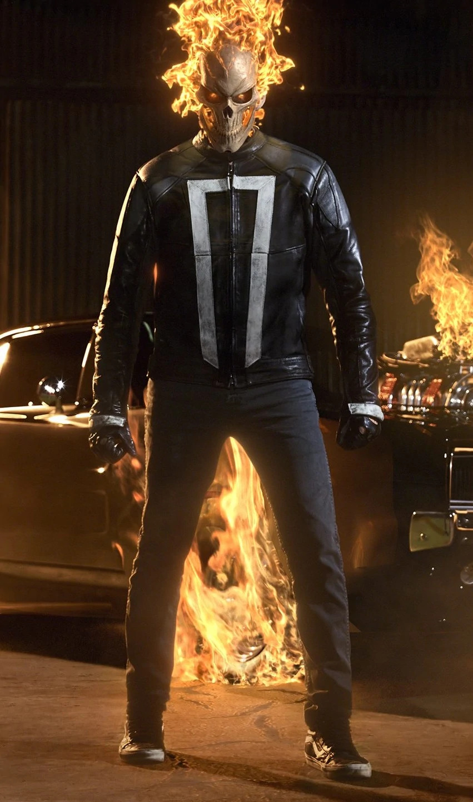
Origines :
Roberto Reyes était un jeune mécanicien qui travaillait dans l'est de Los Angeles, en Californie.
Le quartier où il vivait, Hillrock Heights, était gangrené par les gangs et la corruption, ce qui rendait la vie difficile pour lui et son frère Gabe, qui le considérait comme un héros.
Souhaitant déménager dans un quartier plus sûr, Robbie participa à une course de rue pour gagner le prix de cinquante mille dollars.
A son insu, la voiture qu'il conduisait était hantée.
Alors qu'il prenait la tête, il fut suivi par une voiture qu'il prit pour des policiers.
Inquiet pour Gabe, Robbie tenta de s'enfuir mais se retrouva par inadvertance dans une impasse.
Il sortit de sa voiture et essaya de s'expliquer auprès de ses poursuivants, qui ouvrirent le feu violemment et le tuèrent, avant d'incendier la voiture et le corps de Robbie.
Cependant, au moment où ils prirent la fuite, le fantôme prit possession de Robbie et en fit un nouveau Ghost Rider.
Le Ghost Rider se lança à leur poursuite et parvint à neutraliser une poignée d'assaillants, mais certains réussirent à s'échapper.
Robbie se réveilla le lendemain matin, persuadé que tout ça n'était qu'un cauchemar.
Pourtant, il constata rapidement que l'un de ses yeux était devenu orange.
Inquiet, il retourna à l'atelier où se trouvait sa voiture, Canelo's Auto and Body.
Alors qu'il tentait à nouveau de la conduire, il fut confronté à deux hommes de main travaillant pour le propriétaire du véhicule.
Robbie redevint le Ghost Rider et les attaqua avant de se rendre dans une casse-auto pour reprendre forme humaine.
Le Ghost Rider apparut dans le reflet de Robbie, qui lui demanda qui il était.
Ce dernier lui répondit : « La vraie question est... qui sommes-nous ?
Le démon se révéla être un esprit nommé Eli, et offrit à Robbie la possibilité de se venger de ceux qui l'avaient tué.
Après un bref moment de réflexion, Robbie accepta.
Plus tard, Robbie retourna au garage où il travaillait et découvrit son patron assassiné et la voiture volée.
Eli prétendit savoir qui était le coupable, et Robbie se transforma en Ghost Rider.
Le Rider se téléporta jusqu'à la voiture et fusionna avec elle, attaquant le cartel de la drogue qui l'avait volée.
Il s'apprêtait à les éliminer lorsque leur chef avala soudainement de mystérieuses pilules et se transforma en une créature massive et colossale.
Robbie remporta l'affrontement après une lutte brutale, mais fut bientôt confronté à Mr. Hyde.
Il parvint également à le vaincre, et fut rapidement vu comme un protecteur aux yeux des habitants.
Réticent à devenir un justicier, Robbie utilisa ses pouvoirs afin de gagner de l'argent grâce à des courses de rue, ce qui lui libéra du temps avec son emploi et lui permit de passer plus de temps avec Gabe.
Cette notoriété soudaine attiré l'attention du Ghost Rider original, Johnny Blaze, qui se rendit à Los Angeles pour confronter le nouveau Rider.
Il intercepta Robbie juste après que l'influence d'Eli l'ait poussé à tuer accidentellement un pilote de rue.
Eli prit rapidement le contrôle total du Rider, s'échappa et s'empara progressivement du corps de Robbie sous sa forme humaine afin de se venger du chef mafieux russe nommé Yegor Ivanov.
On découvrit ensuite qu'Eli n'était pas réellement un Esprit de la Vengeance, mais un tueur en série satanique qui avait assassiné et démembré au moins 37 personnes lors de rituels avant d'être finalement abattu par la police en 1999.
Il vivait dans la maison où les frères Reyes s'étaient installés.
Après que Johnny eut maîtrisé Eli avec son Regard de Pénitence, il s'adressa à Robbie, l'avertissant qu'il devait veiller à ce qu'Eli ne se réveille pas.
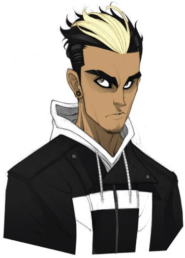
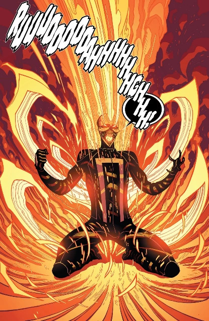
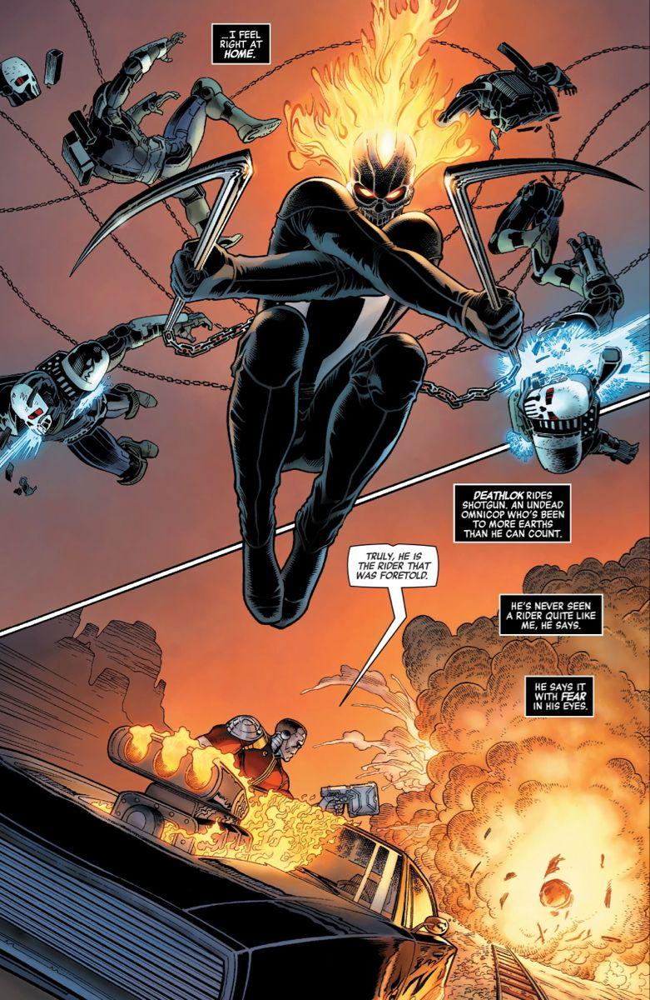
.jpg)
.jpg)

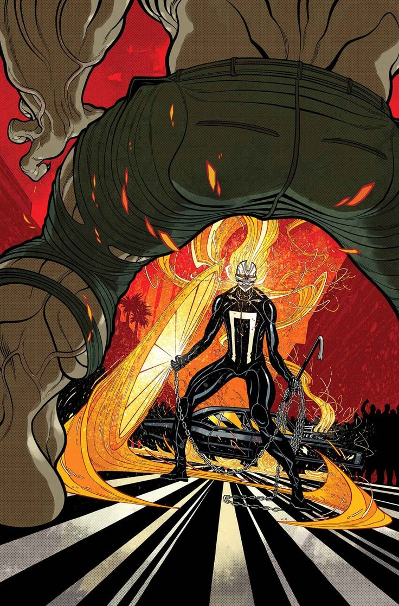
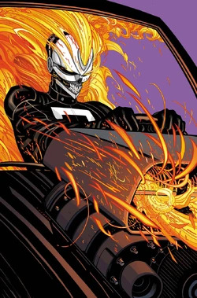
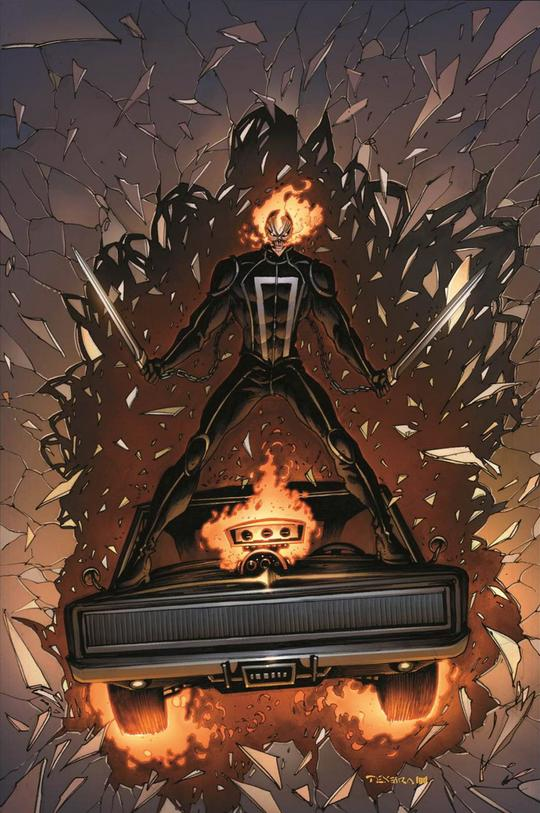
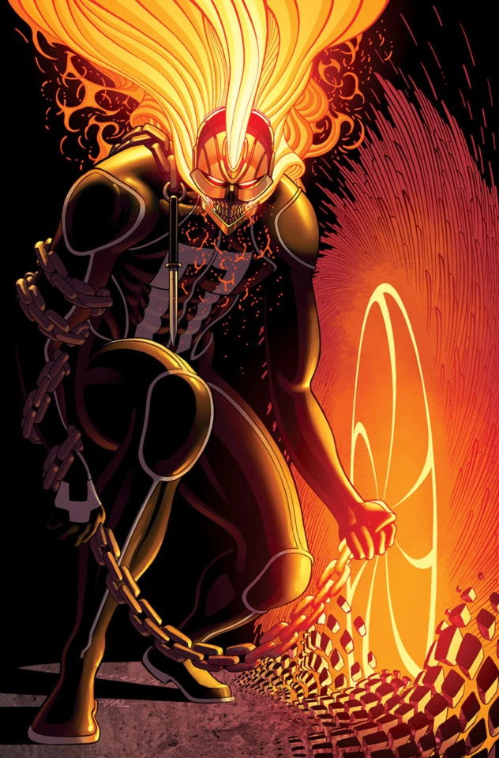
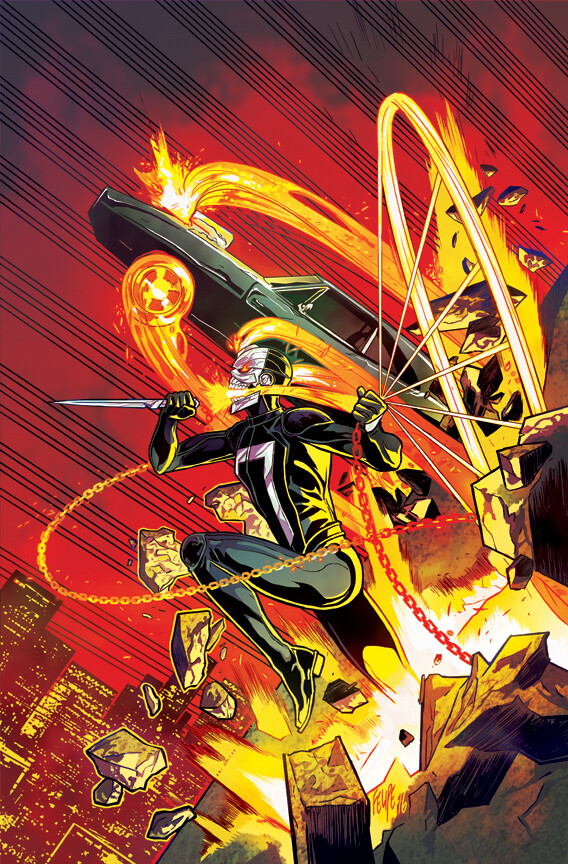


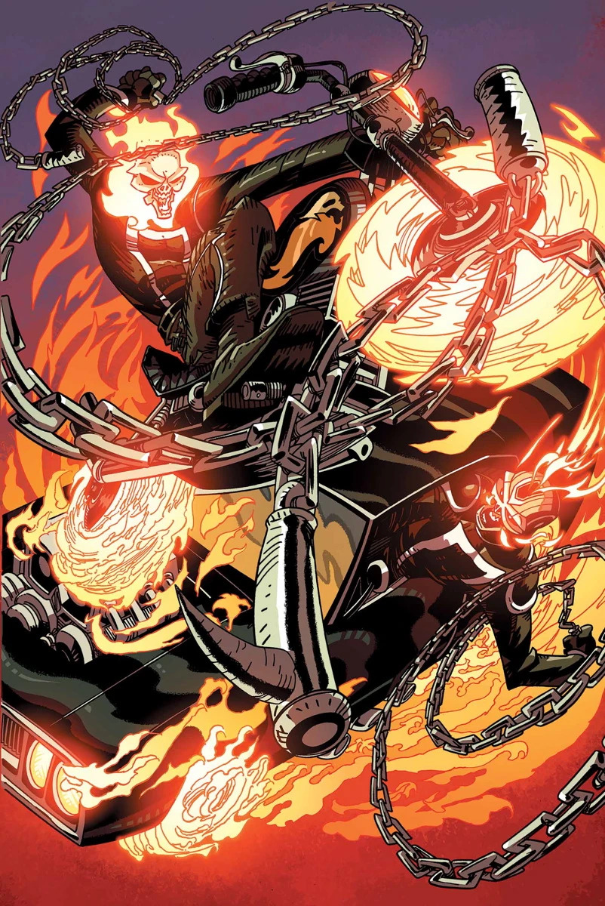
Personnalité :
Robbie Reyes est beaucoup plus humain que les autres incarnations du Ghost Rider.
Ce n'est pas un simple esprit vengeur cherchant à punir les coupables, ses motivations sont fortement liées à sa famille et à son environnement.
Il est avant tout motivé par la volonté de protéger son frère Gabe, assumant très tôt des responsabilités d'adulte.
Malgré son jeune âge, Robbie est sérieux et pragmatique. Il est plutôt réservé et introverti, peu bavard et il garde souvent ses émotions pour lui.
Derrière son apparence parfois froide, il possède un véritable sens moral. Il n'hésite pas à aider les personnes dans le besoin et cherche généralement à éviter que les innocents ne soient victimes de violence.
Son parcours l'a rendu prudent envers les inconnus et il n'accorde pas facilement sa confiance.
Capacités :
Robbie se distingue des Ghost Rider précédents, principalement parce qu'il n'est pas possédé par un Esprit de la Vengeance, ni par aucune autre entité démoniaque, mais par l'esprit d'Eli Morrow, un tueur en série sataniste abattu par la police.
Malgré ça, il possède des capacités similaires à celles de ses prédécesseurs : une force, une vitesse, une agilité, une endurance et une résistance surhumaines, ainsi que la capacité naturelle du Rider à invoquer des flammes infernales.
Il manie une chaîne d'une puissance surnaturelle et peut bannir des personnes en Enfer ou consumer leurs âmes.
Il possède également la capacité de chevaucher n'importe quel véhicule, bien que son véhicule de prédilection reste sa mythique Dodge Charter R/T de 1969 surnommée la Hell Charger.
Elle est liée au Ghost Rider et lui permet de se téléporter instantanément dans la voiture ou de fusionner avec, et elle est capable de se téléporter par les ombres.
Le Ghost Rider possède également un contrôle mental sur sa voiture, lui permettant de la piloter à distance.
Le coffre de sa voiture, une fois ouvert, agit comme un portail vers l'Enfer.

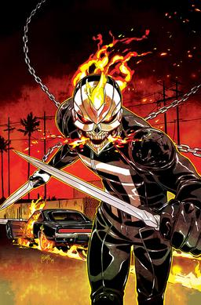
Apparence :
Le Ghost Rider de Robbie Reyes possède un design très différent de celui de Johnny Blaze ou de Danny Ketch.
L'élément le plus emblématique du Ghost Rider est son crâne enflammé.
Son crâne possède des éléments démoniaques comme une tête enflammée métallique rappelant son lien avec sa voiture.
Ses yeux sont généralement représentés comme des fentes lumineuses tandis que sa bouche révèle une rangée de dents acérées, lui donnant une expression agressive.
Des flammes orange et jaunes jaillissent du sommet et de l'arrière de son crâne, donnant l'impression que sa tête entière est embrasée.
Il conserve une silhouette humaine, athlétique et relativement mince, et il porte généralement une veste en cuir noire avec un motif blanc sur le torse, ainsi qu'un pantalon, des bottes et une paire de gants noirs.
Il utilise une chaîne surnaturelle en métal avec, à leur bout, des sortes de faucilles démoniaques pouvant être enveloppée de ses flammes de l'enfer.
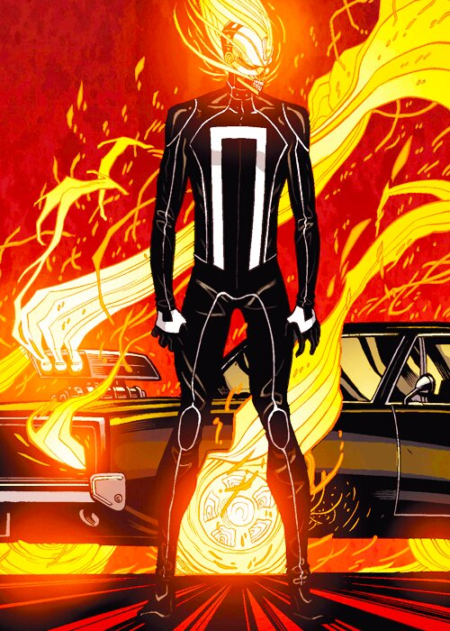
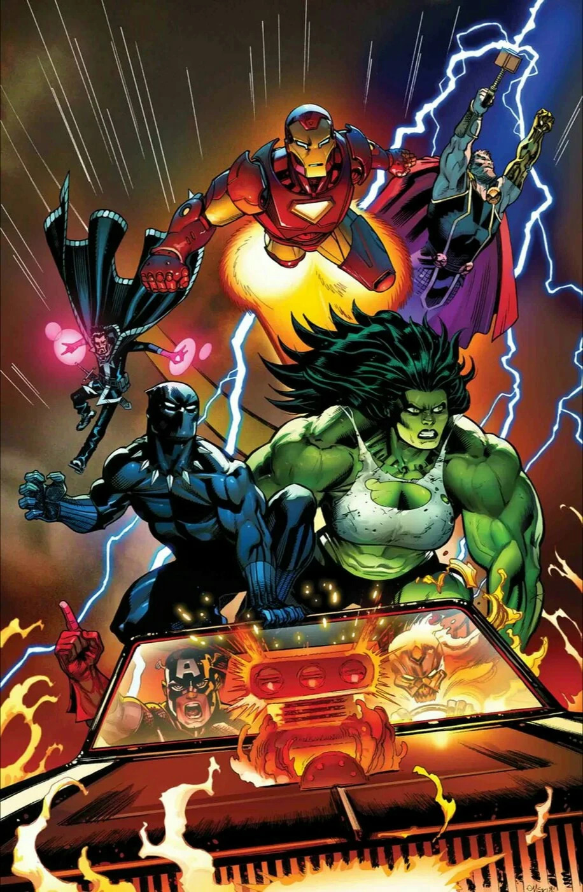
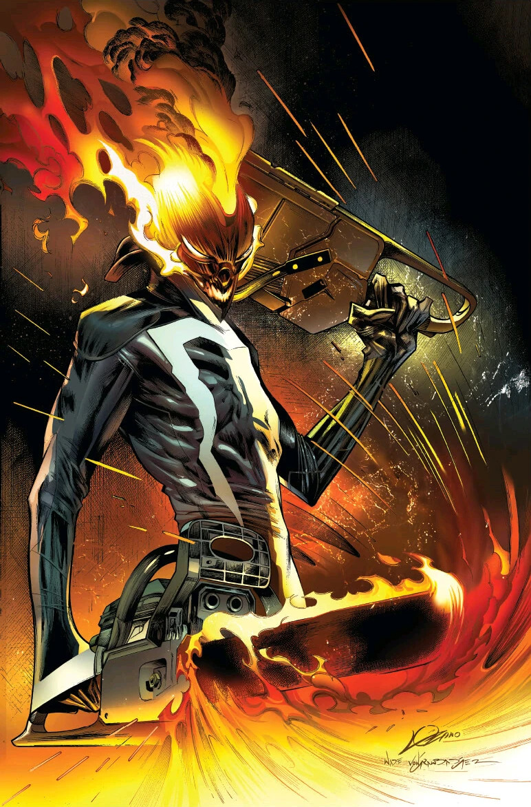
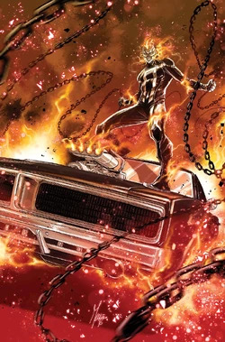
.jpg)
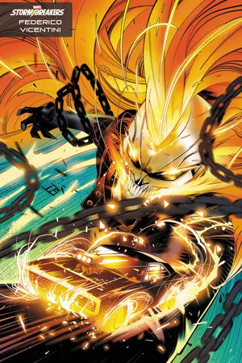
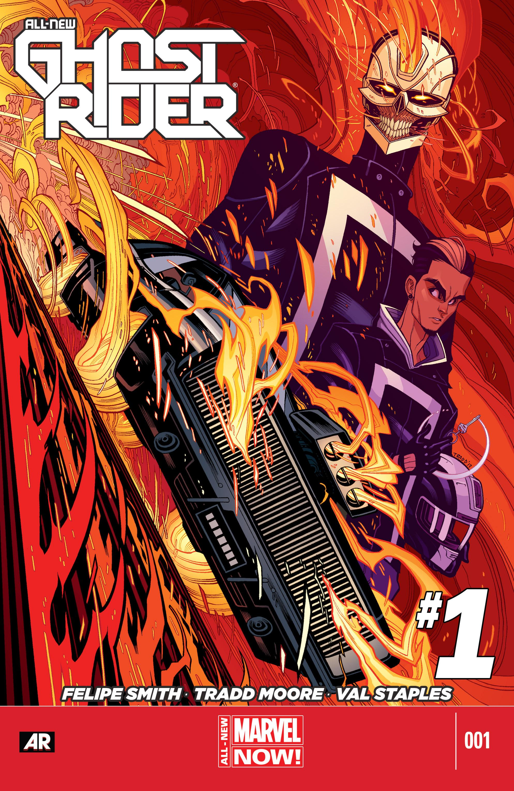

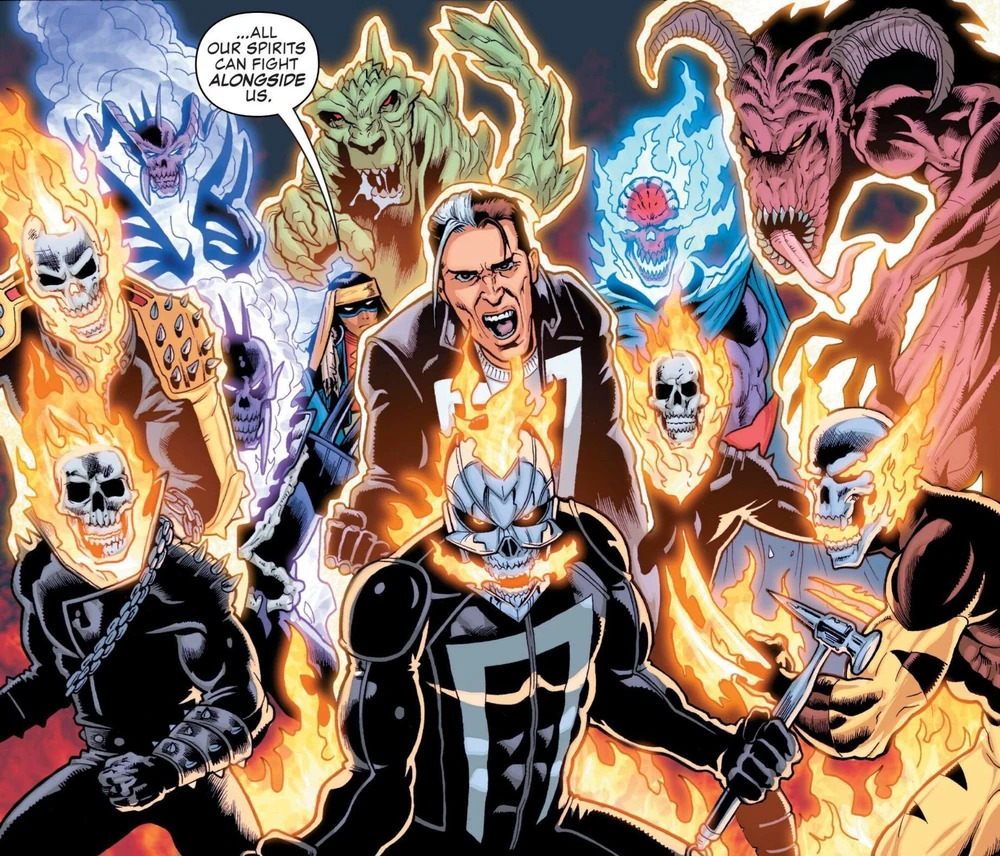
.jpg)
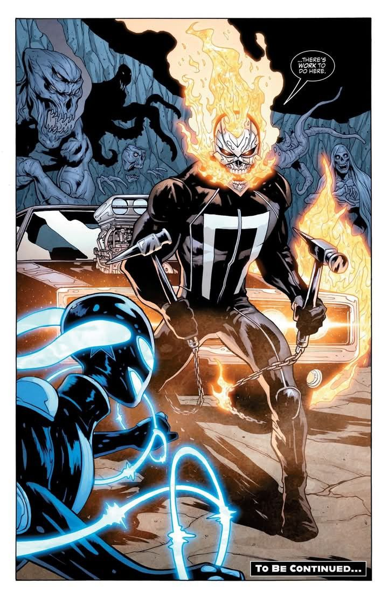
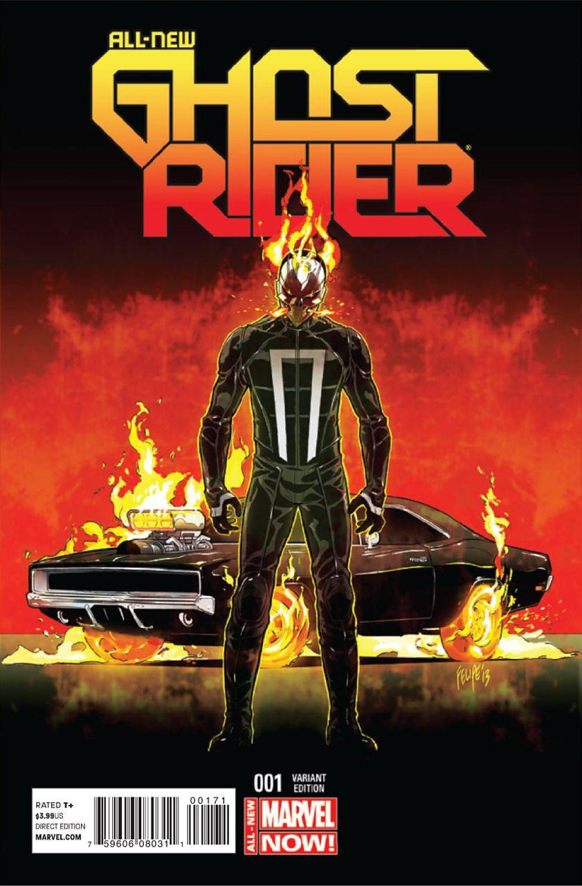
Les principaux ennemis du Ghost Rider
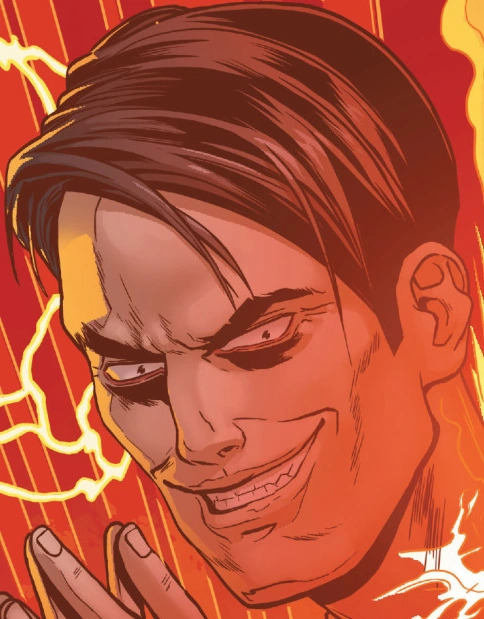
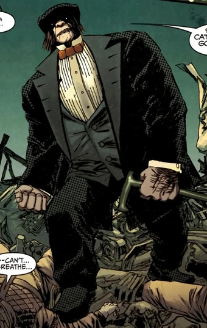
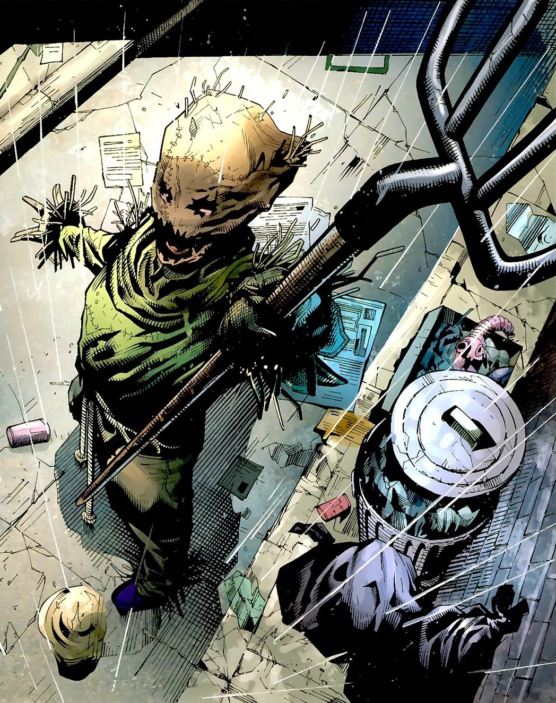

Équipes affiliées